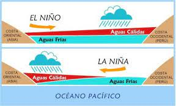

First slide label
Some representative placeholder content for the first slide.

Second slide label
Some representative placeholder content for the second slide.

Third slide label
Some representative placeholder content for the third slide.

Third slide label
Some representative placeholder content for the third slide.
¿que es enos?
29 De Febrero 2024 Por: josue campos
¿Qué es ENOS? ENOS describe la fluctuación de dos cosas en el Pacífico ecuatorial: la temperatura superficial del océano y la presión del aire sobre él. El componente de la temperatura es muy sencillo y la mayoría de los reportes noticiosos se centran en él. Cuando las temperaturas de la superficie del mar superan el promedio por medio grado Celsius o más, se puede formar El Niño. Cuando las temperaturas están por debajo del promedio, se puede formar La Niña. Cuando las temperaturas están dentro o cerca del promedio (a lo que se le llama ENOS-neutral), ninguno se desarrolla. La parte de la presión del aire es un poco más complicada. Se refiere a la diferencia en la presión del aire entre las partes oeste y este del Pacífico ecuatorial. Los científicos usan lecturas de Darwin, en la costa norcentral de Australia, y de Tahití, a más de 8000 kilómetros al este..
¿Con qué frecuencia ocurren y cuánto tiempo duran?
Tanto El Niño como La Niña ocurren en promedio cada dos a siete años. El Niño se registra con mayor frecuencia que La Niña. Pueden durar la mayor parte del año, aunque en ocasiones duran más. La Niña en ocasiones se “duplica” (ocurre una y termina conforme las temperaturas de la superficie del mar se elevan hasta condiciones ENOS-neutral y después una segunda se forma a medida que las temperaturas descienden de nuevo).
Este fenómeno natural es la fluctuación más poderosa en el sistema climático en cualquier parte de la Tierra. La última vez que se formó El Niño fue en 2016 y sus efectos se dejaron sentir en todo el mundo.

¿Como se puede evitar este fenomeno?
Entre las recomendaciones que se dio a la ciudadanía constan: Evitar botar basura en el barrio. Botar la basura en los lugares y horas ya establecidos. Limpiar las alcantarillas antes que inicie la etapa invernal. Además, las familias pudieron conocer sobre los peligros del mal uso del Gas Licuado de Petróleo (GLP) y los daños que ha causado la explosión de los tanques de gas. Cuando falta poco más de un mes para finalizar el año, el personal de la SGR aprovechó para advertir a los visitantes sobre el riesgo de utilizar juegos pirotécnicos. Mientras los padres recibían las charlas, los niños disfrutaban de una ruleta, en la que aprendían sobre las multiamenazas y cómo actuar frente a ellas.
¿Cuales son los efectos posteriores al fenomeno?
Pueden provocar inundaciones, sequías, incendios forestales y otros fenómenos extremos en varios partes del mundo.El Niño puede traer lluvias o un invierno más seco en el sur de Estados Unidos y condiciones más cálidas en América del Sur, mientras que La Niña puede aportar huracanes en el Atlántico Norte y un clima más húmedo en Australia, por citar algunos ejemplos.La consecuencia de esto será que el planeta se enfrentará a olas de calor más intensas, estaciones cálidas prolongadas y tormentas más fuertes. Indonesia y Australia experimentarán probablemente un tiempo más caluroso y seco, lo que incrementará la posibilidad de que haya incendios forestales.